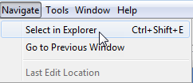
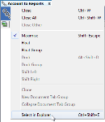
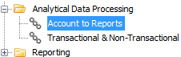
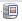
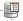
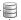
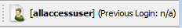
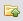

Explorer area
By default, the Explorer area is displayed down the left hand side of the User Interface.
{kind=link}
The Explorer area contains the following:
If the Explorer window is not visible in the user interface the user can initiate this at any time.
To open the Explorer window
- In the main system view, click on the Window option in the Main menu bar and select Explorer.
- The Explorer window will now display in its predefined location in the user interface.
You can drag and drop the Explorer window to any preferred location. See Customise the User Interface for more information.
- The Server Connections Manager window
- The Strategy Viewer window. See the Strategy Viewer window help topic for more information.
- The Navigator window
- The Satellite View window
- The Where Used window
All of the windows (with the exception of the Satellite View window) can be initiated from the Main menu bar.
The Satellite View window will only be displayed when the user is working in the Decision Process Flow editor, Decision Setter editor or publishing.
The Explorer is the area of the user interface where Repositories, Domains, Solutions, Folders and Components are stored and displayed. This is the area in which the hierarchical tree structure of the system can be created and maintained.
The Explorer window is housed in the Explorer area of the user interface. By default on opening the software, the Explorer window will not be displayed. It can be opened from the Main menu bar. Once initiated, it will display on the left hand side of the interface.
When an editor is open for a specific component you can locate this component in the Explorer using the Select in Explorer option accessed either
- from Navigate in the Main Menu bar

{kind=link}
or
- by right clicking on the component name of the editor

{kind=link}
Both options will locate the open component in the solution within the Explorer. 
{kind=link}
To find an open component in the Explorer
- With an editor open and in focus, either select the name tag of the editor, right click and select, Select in Explorer (or
in the Main Menu bar, select Navigate followed by Select in Explorer).
The system will highlight the component in the Explorer.
Within the Explorer window, with the Hierarchical Tree view fully expanded , the user can type to use the Quick Search feature. This feature navigates through the list of components in the Explorer window and highlights anything with part or all of the search criteria.
{kind=link}
- If there are multiple matches then using the up and down arrow will jump the highlighted selection between matches
- Pressing Enter will select the match that is highlighted and open the component
This feature not only works in the Explorer window, but also in the Add From Template wizard when the list is fully expanded.
The text colours used in the Hierarchical Tree structure area of the Explorer window vary depending on where the item is located. The user can customise the text colours if required.
To customise the text colours in the Explorer window
- In the Main system view, click on the Tools and then Option from the Main menu bar.
- Click on the Appearance tab
- Select the Explorer tab.
- In the Colours of components in... field, click on the button next to the location where you wish to customise the colour for.
- The Select the colour to use... dialog will be displayed.
- In the Swatches tab, click on the required colour from the colour grid. A sample of the text in the chosen colour will be displayed in the preview field of the dialog.
- Click OK.
- In the Options dialog, click OK.
{kind=link}
The customisation will be activated immediately.
A Repository is used to hold a secure and persisted copy of the client’s system(s) which can be accessed and updated by the users of the Studio applications. These users may be collaborating on changes to shared systems or may be working alongside each other in separate areas of a system (or on separate systems); the Repository provides an archive and audit trail of changes made by these users during the lifetime of the systems.
| Repositories are displayed in the Server Connections Manager window and in the Explorer window. |
The Repository is also the location from which collections of users' changes will be coordinated and collated into deployment packages (see Label Management).
Repositories are displayed with the following icons:

{kind=link}

{kind=link}

{kind=link}
Users can create as many repositories as required and can connect to several repositories thanks to the single sign on feature. A user may have access to multiple repositories, but must be connected to a repository to work on the components within it.
A Repository is the receptacle where the Domains and the Solutions are stored.
For more information on the Repository see the Repository overview topic.
A repository may contain one or more domains, each of which can contain one or more solutions. User details and access permissions operate at repository level, and a user's role-based permissions may therefore span domains, or be confined within a single domain, as required within the repository.
Many clients, particularly those with only a single solution, or a small number of solutions, will generally have a single domain within their repository. For enterprise-level clients, or for delivery centres working on multiple solutions for many clients, the domain provides a useful mechanism for grouping sets of solutions that logically belong together (and conversely to separate/isolate them from other solutions/groups of solutions).
{kind=link}
A domain is displayed with the icon in the Explorer window. For more information on the Domain refer to the Domain overview topic.
{kind=link}
A solution is a level by which the contents of domains can be further divided. Solutions are stored and displayed within a domain in the Explorer window. Some examples could include solutions that:
- are composed from purely decisioning capability and content, or purely operational capability and content, or from a combination of both
- are organised differently based on business objectives and solution scope
- cover multiple work streams such as origination, customer management and reporting
- are multi-country solutions designed with the capability to isolate country specifics
- manage multiple credit products and associated components with the potential for cross product activities such as cross-selling
The publishing mechanism that allows sharing of components operates within the solution boundary; for example, definitions of data models and layouts can be located in a folder and published for use within other parts of the solution, but not within other solutions.
A solution is represented with the icon and can be viewed, added, deleted, renamed and loaded in the Explorer window.
{kind=link}
The user can import a previously exported component, folder or solution along with any dependent components and folder structures.
The user can export a component, folder or solution along with any dependant components and folder structures.
For more information on the Solution see the Solution overview topic.
Folders are used to provide an organisational structure for the components contained within a solution. Folders can contain many different types of components. It makes things easier to find if components of a similar type are grouped together, for example; segmentation devices, decision process flows, etc. Folders are stored in the shared area and displayed in the Explorer window.
A folder is displayed with the icon, for more information on the Folder see the Folder overview topic.
{kind=link}
A component is an entity within a Solution that carries out a particular business function. Examples include Decision Process Flows, Scorecards, Logical Data Source etc. Components are stored and displayed in the Explorer window.
Folders are used to provide an organisational structure for the components contained in the solution. Folders can contain many different types of component. It makes things easier if components of a similar type are grouped together, for example; segmentation devices, decision process flows, etc.
For more information on Components see the Component overview topic.
The Security Explorer window is housed in the Explorer area of the user interface. By default on opening the software, the Security Explorer window will not be displayed. 
User can initiate the Security Explorer window from the Main menu bar or can access directly via the Audit Trails view by selecting the
{kind=link}
Once initiated, it will display on the left hand side of the interface. If closed and reopened it will display in its default position.
| Users without the Security Administrator Profile will have access to view certain functions in the Security Explorer window. |
The Security Explorer window which caters for users without the Security Administrator Profile consists of:
- The My Profile area - When initiated, the My Profile editor is displayed. The My Profile editor provides read only information for the current user account and allows the user to change their password.
- The Audit Trails area - When initiated, the Audit Trails editor is displayed. The user can only view audit trails of their own activities with the option to filter for a date and time period.
If the Security Explorer window is not visible in the User Interface, it can be initiated at any time.
The Security Explorer window is the area of the user interface where a user with the Security Administrator Profile can view and edit the Global Security Settings, Session Management, User accounts, User Groups, Functional Roles and Security Profiles.
Users can open the Security Explorer window from the Main menu bar or can access directly via the Audit Trails view by selecting the icon from the Main toolbar. The icon displays the time of the previous login of the current user. Any suspicious times should lead the user to check the Audit Trails log.
| Only users with the Security Administrator Profile will have access to edit the functions in the Security Explorer window. |
To open the Security Explorer window from the Main menu bar
- In the main system view either click on the Window in the Main menu bar and select Security Explorer (or select from the User Interface).
The Security Explorer window will be opened and will display in the default predefined position in the user interface.
|
A user without the Security Administrator profile assigned can open the My Profile editor located in the Security Explorer window from the Window option in the Main menu of the software. The user can view specific details about their account but the detail is read only with the exception of Change password. The user can also open the Audit Trails editor located in the Security Explorer window. The user can view Audit Trails of their own activities with the option to filter for a date and time period. |
The Server Connections Manager enables the user to view the server connections to servers that host the following:
- Solution repositories
- Content repositories
- Reporting repositories
- Job servers
- Server Connection Profiles
The Server Connections Manager is relative to the Experian Decision Analytics security server configuration which is not editable in this view. This window displays the kind of connections available and identifies if the current configuration is connected to the correct content/solution repositories.
The configuration is defined by the Experian Decision Analytics security server administrators and cannot be viewed by a normal user (except with this view).
All remote connections viewed here are relative to the Experian Decision Analytics servers.
The Server Connections Manager window is housed in the Explorer area of the user interface. By default on opening the software the Server Connections Manager window will not be displayed. It can be initiated from the Main menu bar. Once initiated, it will display on the left hand side of the interface.
If the Server Connections Manager window is not visible in the user interface, the user can open this at any time.
To open the Server Connections Manager window
- In the main system view, click on the Window option in the Main menu bar and select Server Connections Manager.
- The Server Connections Manager window will now display in its predefined location in the user interface.
You can drag and drop the Server Connections Manager window to any preferred location. See Customise the User Interface for more information.
The Navigator displays the contents of a selected component and its dependencies.
The Navigator window is housed in the Explorer area of the user interface. By default the Navigator window is displayed on the left hand side of the interface beneath the Explorer window.
| Components that have been moved to the Recycle Bin can also be viewed in the Navigator window. |
The Navigator window is populated when the user left clicks on a component in the Explorer window or when the user opens a component in the Main editor.
The Navigator window displays the contents of a selected component and its dependencies.
If the Navigator window is not visible in the User Interface, it can be opened from the Main menu bar.
To open the Navigator window
- In the main system view, click on the Window option in the Main menu bar and select Navigating.
- Select Navigator.
The Navigator window will be opened at the bottom left hand side of the User Interface.
The Navigator window is populated when the user left clicks on a component in the Explorer window or when the user opens a component in the Main editor.
The Satellite View is the area of the user interface where the the user can view a reduced image of the Main editor. If the process in the Main editor is too large to view in full the reduced image enables the user to see a process fully.
The Satellite View window is initiated when the Decision Process Flow or Decision Setter components are open in the Main editor. It is also initiated when the user is publishing.
The Satellite View window is housed in the Explorer area of the user interface. By default on opening the software the Satellite View window will be displayed on the left hand side of the interface beneath the Explorer window.
The Satellite View is the area of the user interface where the the user can view a reduced image of the Main editor. If the process in the Main editor is too large to view in full the reduced image enables the user to see a process fully.
The Satellite View window is initiated when the Decision Process Flow or Decision Setter components are open in the Main editor. It is also initiated when the user is publishing.
The following is an example of the Satellite View window:
{kind=link}
The Satellite View window shows the process in the Main editor in full. The image within the grey frame in the Satellite View window represents the current view in the Main editor. The frame can be moved either by dragging and dropping or by clicking in an area within the Satellite View window, giving the user the ability to change what is viewed in the Main editor.
Where Used displays all components that have references to a selected component or characteristic.
In large solutions with multiple users modifying content, a Where Used query can be used to carry out impact analysis to assess which components are referencing (and so may be affected by changes to) a given component, enabling the user to access them and synchronise changes.
| Embedded components will not be displayed in the Where Used window. |
The Where Used window when activated displays in the Explorer area of the user interface.
Where Used can be actioned on a component from the Explorer window or on a characteristic from within a Logical Data Model or Logical Data Source. It can also be carried out from within the Where Used window.
For those components that have been moved to the Recycle Bin, the user can use the Where Used option to display all of the components that have references with the selected components.
|
For a matrix used in a scorecard: Where used on the matrix will show the dependencies:- matrix –> scorecard The scorecard doesn’t reference the class set, but it is included in the where used report as any change to the class set could have an impact on the scorecard through the interaction with the class set. Where used on the characteristic used in the class set will show the dependencies:- characteristic -> class set -> matrix –> scorecard. |
To view where a component is referenced
| Embedded components will not be displayed in the Where Used window. |
- In the Explorer window, right click on the component you want to see the referenced components for.
- Select Where Used.
- The Where Used window will be initiated. All of the components that make reference to the component will be displayed; and for each of the referenced components it will then show components that make reference to these.
- To view any of the listed components in detail in the Main editor, double click on the component name or right click on the component name and select Open in the Where Used window. The component will be displayed in the Main editor area of the user interface.
- You can right click on any component in the Where Used window to see any further referenced components.
| For example, querying Where Used "Results GenL", we get this list of multiple components that can be impacted: |
Use the button to expand all and view components that are further referenced or the 
{kind=link}
{kind=link}
To view where a characteristic is referenced
|
Embedded components will not be displayed in the Where Used window. The results returned will be for the selected characteristic only and not the entire Logical Data Model or Logical Data Source. |
- With a Logical Data Model or Logical Data Source open in the Main editor, right click on the characteristic you want to see the referenced components for.
- Select Where Used.
- The Where Used window will be initiated, the system will be scanned for references and a progress bar will be displayed.
- To view any of the listed components in detail in the Main editor, double click on the component name or right click on the component name and select Open in the Where Used window. The component will be displayed in the Main editor area of the user interface.
- You can right click on any component in the Where Used window to see any further referenced components.
|
For example, querying Where Used on the characteristic "Application Date" in this Logical Data Source: We get this list of multiple components that can be impacted: |
{kind=link}
{kind=link}
Use the button to expand all and view components that are further referenced or the button to collapse all components.